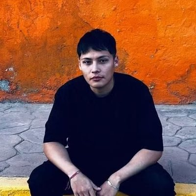
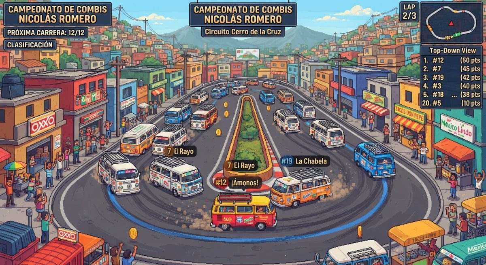

Baby Shower de Julián
Sitio web de invitación para el baby shower de Julián, publicado en GitHub Pages.
WebGitHub Pages
Desarrollador de software en formación
Construyo aplicaciones móviles, web y videojuegos. Aquí reúno las evidencias de mi trabajo en la Universidad Tecnológica Fidel Velázquez.
Ver proyectosDescargar CV (PDF)Ingeniería en Desarrollo de Software Multiplataforma · 2022 – 2026
Gestión de Desarrollo de SoftwarePruebas de software móvilEmprendimientoSitio web de invitación para el baby shower de Julián, publicado en GitHub Pages.
WebGitHub PagesAplicación web para un evento: publica información, registra asistentes, asigna lugares y genera códigos QR de validación, con confirmación por WhatsApp. Incluye análisis, prototipo en Figma, base de datos SQL y pruebas.
WebSQLFigmaQR
Videojuego 2D de carreras en vista cenital inspirado en el transporte local: campeonato de 12 carreras, clasificación, tabla de puntos, monedas y 20 competidores.
Videojuego 2DPCProyecto de emprendimiento: servicio que resuelve problemas de construcción, con MVP, prueba con público, métricas y decisión de perseverar, iterar o pivotar.
EmprendimientoMVP